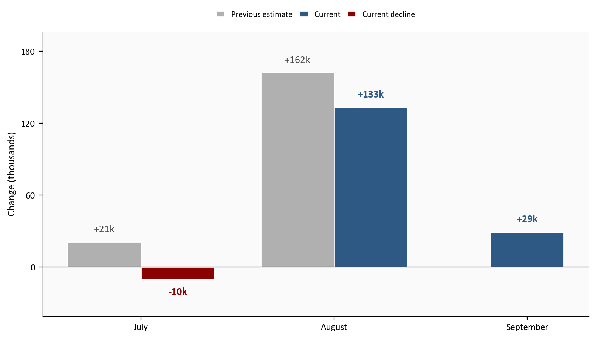
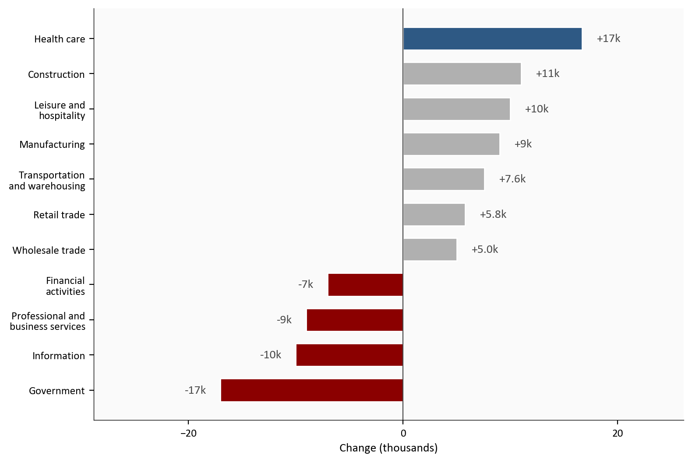
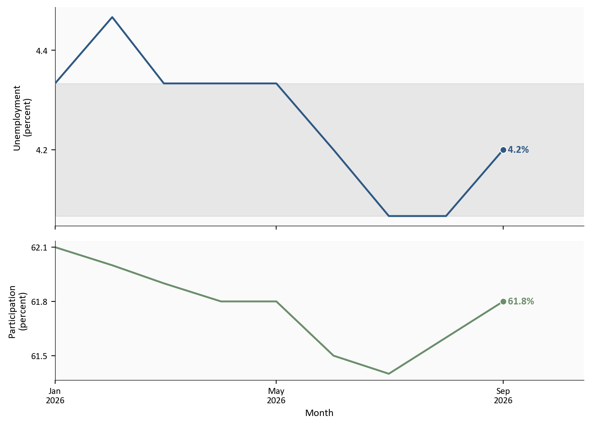
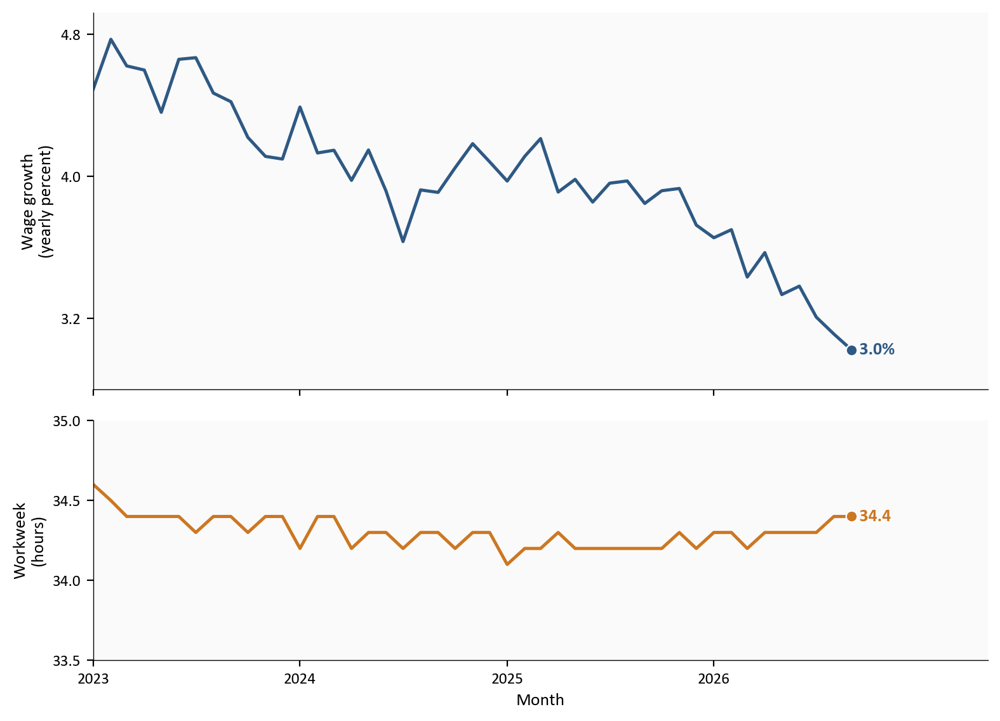
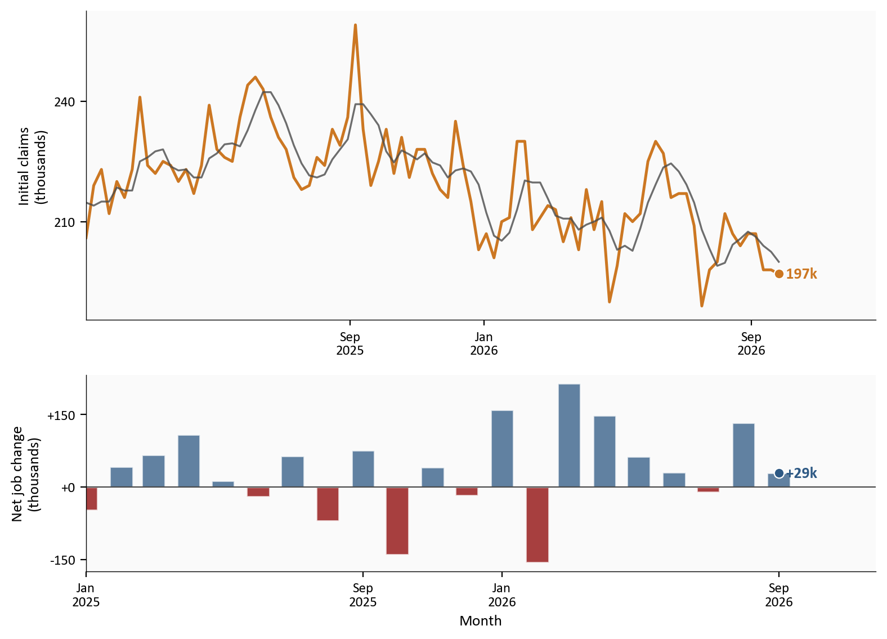

Nonfarm payrolls
+29k
Sep 2026
July + August revision
-60k
previously published
Unemployment rate
4.2%
from 4.1%
Average hourly earnings
3.0%
year-over-year
BLS Employment Situation via FRED | 10/2/2026 | September 2026
Yoram Gilboa
October 4, 2026
The August jobs report looked like a rebound. September showed that the first estimate overstated its size. Nonfarm payrolls rose +29k, below the +45k average over the prior 12 months. The Bureau of Labor Statistics revised July from +21k to -10k and August from +162k to +133k. Combined, those two months are 60k lower than previously published.
Unemployment was 4.2%, with 7.1 million people unemployed. Average hourly earnings were 37.81 dollars, up 0.1% on the month and 3.0% over the year. Weekly initial claims were 197k in the week ending 9/26/2026. BLS said September payroll employment changed little. The approximate 90 percent confidence interval for the monthly change is plus or minus 122k, so the reported estimate is not statistically distinguishable from zero. That interval describes the monthly estimate. It does not test whether September differed from August. Low claims showed no sign of a broad layoff surge. Slower hiring is one interpretation, but September hires and separations are not yet available.
The Python code used to generate each chart is included in this post. Click on any code block to see the full implementation. The complete data pipeline includes:
01_fetch_data.py: Verifies the committed October 2, 2026 FRED snapshot. It does not download a newer vintage. Its refresh option writes a side copy under data/raw/refresh/ using that release vintage and the observation cutoffs, and it does not replace the snapshot.02_clean_data.py: Cleans levels and computes monthly job changes and percent rates04_compute_stats.py: Computes summary statistics for the prose and cards from the committed snapshotPayrolls, household rates, wages, hours, and industry detail are from the archived BLS Employment Situation via the committed FRED snapshot. Previously published payroll estimates and the ADP private-sector contrast are transcribed from the linked official releases.
BLS Employment Situation via FRED | 10/2/2026 | September 2026
This news release is two surveys. The establishment survey asks employers how many jobs are on payrolls, plus hours and pay. Nonfarm payrolls are that employer count, excluding farm work, the self-employed, and a few other groups. The household survey asks people whether they are employed, unemployed, or outside the labor force. The unemployment rate is the share of the labor force that is jobless and looking. The labor force participation rate is the share of adults who are working or looking.
A revision is BLS replacing last month’s estimate after more firms report and after seasonal factors are recalculated. Payroll estimates are preliminary through their first two releases. JOLTS, the Job Openings and Labor Turnover Survey, counts openings, hires, quits, and layoffs, and it lags the jobs print by a month. Initial claims count new filings for unemployment insurance each week. Average hourly earnings are the CES wage for private employees. Use payrolls for net job growth, the household survey for unemployment and participation, and claims as a timely but incomplete signal of layoffs.
Total nonfarm payrolls rose +29k in September. Private payrolls rose +46k. Government fell 17k. The prior-12-month average was +45k. BLS described the payroll change as little changed. The approximate 90 percent confidence interval is plus or minus 122k, so this reported estimate is not statistically distinguishable from zero. That interval does not test the August-to-September difference.
The revision is the other print. July moved from +21k, the figure in the August Employment Situation, to -10k. August moved from +162k to +133k. Together those two months are 60k lower than previously published. The three-month average, which now includes September, is +51k. That average is still above the prior-12-month pace because the revised August remains a solid month. The September point estimate sits below both of those reported averages.
# Previous-estimate columns are the previously published CES changes from the
# BLS release text. Current columns are this month's PAYEMS first
# differences from scripts/02_clean_data.py.
plot = revisions.copy()
plot.loc[plot["month"].eq("September"), "first_print_k"] = np.nan
x = np.arange(len(plot))
width = 0.38
current_positions = np.where(plot["first_print_k"].notna(), x + width / 2, x)
current_colors = [
COLORS["accent"] if value < 0 else COLORS["primary"] for value in plot["current_k"]
]
fig, ax = plt.subplots(figsize=(8.0, 4.6))
ax.bar(
x - width / 2,
plot["first_print_k"],
width,
color=COLORS["light"],
edgecolor="white",
)
ax.bar(
current_positions,
plot["current_k"],
width,
color=current_colors,
edgecolor="white",
)
ax.axhline(0, color=COLORS["neutral"], linewidth=0.8)
bar_span = plot[["first_print_k", "current_k"]].max().max() - plot[["first_print_k", "current_k"]].min().min()
label_padding = 0.04 * bar_span
for position, row in plot.iterrows():
if pd.notna(row["first_print_k"]):
ax.text(
position - width / 2,
row["first_print_k"] + (label_padding if row["first_print_k"] >= 0 else -label_padding),
f"{row['first_print_k']:+.0f}k",
ha="center",
va="bottom" if row["first_print_k"] >= 0 else "top",
fontsize=10,
color=COLORS["neutral"],
)
ax.text(
current_positions[position],
row["current_k"] + (label_padding if row["current_k"] >= 0 else -label_padding),
f"{row['current_k']:+.0f}k",
ha="center",
va="bottom" if row["current_k"] >= 0 else "top",
fontsize=10,
color=COLORS["accent"] if row["current_k"] < 0 else COLORS["primary"],
fontweight="bold",
)
ax.set_xticks(x)
ax.set_xticklabels(plot["month"])
ax.set_ylabel("Change (thousands)")
ax.set_ylim(min(0, plot["current_k"].min()) - 0.18 * bar_span, plot[["first_print_k", "current_k"]].max().max() + 0.2 * bar_span)
ax.yaxis.set_major_locator(ticker.MaxNLocator(nbins=4))
legend_handles = [
plt.Rectangle((0, 0), 1, 1, facecolor=COLORS["light"], edgecolor="white", label="Previous estimate"),
plt.Rectangle((0, 0), 1, 1, facecolor=COLORS["primary"], edgecolor="white", label="Current"),
plt.Rectangle((0, 0), 1, 1, facecolor=COLORS["accent"], edgecolor="white", label="Current decline"),
]
ax.legend(handles=legend_handles, loc="lower center", bbox_to_anchor=(0.5, 1.02), ncol=3, frameon=False, handlelength=1, columnspacing=0.8)
plt.tight_layout()
fig.savefig(IMG_DIR / "revision-bars.png", dpi=150, bbox_inches="tight")
Source: Archived BLS Employment Situation previously published estimates; October 2 snapshot of FRED PAYEMS.
The 9/4 post, The Jobs Rebound Was Restaurants and Schools, treated August as a restaurant-and-school rebound. Food services and drinking places were +59.2k and local government education was +41.9k in the original BLS table, together 62.4% of the first-print +162k. On this vintage those two are +33.8k and +49.3k. They still sum to 62.5% of the revised +133k, but restaurants were cut and local schools were raised. Leisure and hospitality itself was revised from +62k to +37k. The composition story survived, but its restaurant component and the total rebound were smaller than first reported.
BLS said employment in every major industry changed little. The release narrated four industries. Health care added +17k jobs, slower than its +33k average over the prior 12 months. Construction added +11k. Manufacturing added +9k and is up +72k since 12/2025. Financial activities lost 7k jobs.
Other supersector figures are point estimates inside that little-changed band, from Summary table B or Table B-1. Information lost 10k. Professional and business services lost 9k, including 10.9k in temporary help. Leisure and hospitality added +10k. Government fell 17k.
Food services and drinking places added +10.8k inside leisure at +10k; the rest of leisure fell. Local government education fell 1.8k. Those two supplied most of the August first print. They did not supply most of September.
Wholesale trade added +5.0k, retail trade +5.8k, and transportation and warehousing +7.6k. Each was positive in Summary table B. Together they are on the order of health care, and they are on the chart below.
# Supersector changes are CES first differences from 02_clean_data.py.
# Wholesale, retail, and transportation are Summary table B September
# changes written in 04_compute_stats.py. Food services and local
# education sit inside leisure and government, so they are omitted here.
plot_sector = sector[sector["industry"] != "All other"].sort_values("change_k")
highlight = {"Health care"}
bar_colors = []
for industry, value in zip(plot_sector["industry"], plot_sector["change_k"]):
if value < 0:
bar_colors.append(COLORS["accent"])
elif industry in highlight:
bar_colors.append(COLORS["primary"])
else:
bar_colors.append(COLORS["light"])
industry_labels = {
"Leisure and hospitality": "Leisure and\nhospitality",
"Transportation and warehousing": "Transportation\nand warehousing",
"Professional and business": "Professional and\nbusiness services",
"Financial activities": "Financial\nactivities",
}
display_industries = plot_sector["industry"].replace(industry_labels)
fig, ax = plt.subplots(figsize=(8.0, 5.4))
ax.barh(
display_industries,
plot_sector["change_k"],
color=bar_colors,
edgecolor="white",
height=0.65,
)
ax.axvline(0, color=COLORS["neutral"], linewidth=0.8)
x_span = plot_sector["change_k"].max() - plot_sector["change_k"].min()
one_decimal = {
"Wholesale trade",
"Retail trade",
"Transportation and warehousing",
}
for industry, display_industry, value in zip(plot_sector["industry"], display_industries, plot_sector["change_k"]):
offset = 0.04 * x_span
label = f"{value:+.1f}k" if industry in one_decimal else f"{value:+.0f}k"
ax.text(
value + offset if value >= 0 else value - offset,
display_industry,
label,
va="center",
ha="left" if value >= 0 else "right",
fontsize=10,
color=COLORS["neutral"],
)
xmin = float(plot_sector["change_k"].min())
xmax = float(plot_sector["change_k"].max())
ax.set_xlim(xmin - 0.35 * x_span, xmax + 0.28 * x_span)
ax.set_xlabel("Change (thousands)")
ax.xaxis.set_major_locator(ticker.MaxNLocator(nbins=3))
plt.tight_layout()
fig.savefig(IMG_DIR / "industry-mix.png", dpi=150, bbox_inches="tight")
Source: Archived September Employment Situation Table B-1 via the October 2 FRED snapshot; wholesale, retail, and transportation from Summary table B in that archive.
The household survey is a different sample from payrolls. Unemployment was 4.2%, still inside the 4.1% to 4.3% band that has held since March. 7.1 million people were unemployed. Table A-1 shows the labor force up +485k and household employment up +406k. Those monthly changes come from a different sample than payrolls. They are not a second payroll print. Use payrolls for the pace of net job growth.
BLS said the labor force participation rate, at 61.8%, and the employment-population ratio, at 59.2%, changed little. Black unemployment rose to 7.0%, the only major group BLS said increased.
Long-term unemployment, people jobless for 27 weeks or more, was 1.9 million, 27.1% of the unemployed. People working part time for economic reasons were 4.5 million.
# Household rates are FRED levels, not derived in 02. The payroll-change
# formulas in 02_clean_data.py do not apply to these percent-of-population
# series.
plot = labor.loc["2026-01-01":, ["unrate", "civpart"]].dropna()
fig, axes = plt.subplots(
2, 1, figsize=(8.0, 5.8), sharex=True, gridspec_kw={"height_ratios": [2.2, 1.4]}
)
axes[0].axhspan(
stats["unrate_band_low"],
stats["unrate_band_high"],
color=COLORS["light"],
alpha=0.25,
zorder=0,
)
axes[0].plot(plot.index, plot["unrate"], color=COLORS["primary"], linewidth=1.8, zorder=3)
axes[0].scatter(
plot.index[-1],
plot["unrate"].iloc[-1],
s=40,
color=COLORS["primary"],
zorder=5,
edgecolors="white",
linewidth=0.8,
)
axes[0].text(
plot.index[-1],
plot["unrate"].iloc[-1],
f" {plot['unrate'].iloc[-1]:.1f}%",
color=COLORS["primary"],
fontsize=10,
fontweight="bold",
va="center",
)
axes[0].set_ylabel("Unemployment\n(percent)")
axes[1].plot(plot.index, plot["civpart"], color=COLORS["secondary"], linewidth=1.8)
axes[1].scatter(
plot.index[-1],
plot["civpart"].iloc[-1],
s=40,
color=COLORS["secondary"],
zorder=5,
edgecolors="white",
linewidth=0.8,
)
axes[1].text(
plot.index[-1],
plot["civpart"].iloc[-1],
f" {plot['civpart'].iloc[-1]:.1f}%",
color=COLORS["secondary"],
fontsize=10,
fontweight="bold",
va="center",
)
axes[1].set_ylabel("Participation\n(percent)")
axes[1].set_xlabel("Month")
for ax in axes:
extend_xlim(ax, plot.index, 0.18)
ax.xaxis.set_major_locator(mdates.MonthLocator(bymonth=[1, 5, 9]))
ax.xaxis.set_major_formatter(mdates.DateFormatter("%b\n%Y"))
ax.yaxis.set_major_locator(ticker.MaxNLocator(nbins=3))
ax.yaxis.set_major_formatter(ticker.FormatStrFormatter("%.1f"))
plt.tight_layout()
fig.savefig(IMG_DIR / "household.png", dpi=150, bbox_inches="tight")
Source: BLS Current Population Survey via FRED, UNRATE and CIVPART.
Pay is one channel through which a tight labor market can affect inflation. Average hourly earnings for all private employees rose 5 cents, or 0.1%, to 37.81 dollars. Over the year they are up 3.0%, down from 3.1% in the August post. Production and nonsupervisory workers earned 32.60 dollars, up 7 cents, or 0.2%, on the month. The private workweek remained at 34.4 hours.
# AHE y/y is defined in scripts/02_clean_data.py. Hours are the FRED
# level (AWHAETP), not a percent change.
plot = labor.loc["2023-01-01":, ["ahe_yoy", "hours"]].dropna()
fig, axes = plt.subplots(
2, 1, figsize=(8.0, 5.8), sharex=True, gridspec_kw={"height_ratios": [2.2, 1.4]}
)
axes[0].plot(plot.index, plot["ahe_yoy"], color=COLORS["primary"], linewidth=1.8)
axes[0].scatter(
plot.index[-1],
plot["ahe_yoy"].iloc[-1],
s=40,
color=COLORS["primary"],
zorder=5,
edgecolors="white",
linewidth=0.8,
)
axes[0].text(
plot.index[-1],
plot["ahe_yoy"].iloc[-1],
f" {plot['ahe_yoy'].iloc[-1]:.1f}%",
color=COLORS["primary"],
fontsize=10,
fontweight="bold",
va="center",
)
axes[0].set_ylabel("Wage growth\n(yearly percent)")
axes[0].set_ylim(2.8, max(plot["ahe_yoy"].max() + 0.15, 4.9))
axes[1].plot(plot.index, plot["hours"], color=COLORS["warning"], linewidth=1.8)
axes[1].scatter(
plot.index[-1],
plot["hours"].iloc[-1],
s=40,
color=COLORS["warning"],
zorder=5,
edgecolors="white",
linewidth=0.8,
)
axes[1].text(
plot.index[-1],
plot["hours"].iloc[-1],
f" {plot['hours'].iloc[-1]:.1f}",
color=COLORS["warning"],
fontsize=10,
fontweight="bold",
va="center",
)
axes[1].set_ylabel("Workweek\n(hours)")
axes[1].set_xlabel("Month")
axes[1].set_ylim(33.5, 35.0)
for ax in axes:
extend_xlim(ax, plot.index, 0.18)
ax.set_xticks(pd.date_range(plot.index[0], plot.index[-1], freq="YS"))
ax.xaxis.set_major_formatter(mdates.DateFormatter("%Y"))
ax.yaxis.set_major_locator(ticker.MaxNLocator(nbins=3))
ax.yaxis.set_major_formatter(ticker.FormatStrFormatter("%.1f"))
plt.tight_layout()
fig.savefig(IMG_DIR / "wages-hours.png", dpi=150, bbox_inches="tight")
Source: BLS CES via FRED, CES0500000003 and AWHAETP.
Initial claims were 197k in the week ending 9/26/2026. The four-week average was 200k. Those readings are low by historical standards and do not indicate a broad layoff surge. They are consistent with slower hiring, but claims cover unemployment-insurance filings rather than all job separations, and payrolls measure net employment change rather than gross hires.
JOLTS lags the jobs print by a month. The latest JOLTS month in this file is 8/2026: 7.1 million openings, 5.2 million hires, 3.1 million quits, and 1.6 million layoffs and discharges. That is context for the summer, not a September reading.
ADP estimated +90k private-sector jobs in September, released 9/30/2026. ADP is a payroll-processor sample of private employers. It is not the BLS establishment survey. BLS private payrolls were +46k. Treat the ADP figure as a contrast, not as a substitute for the official count.
# Claims are weekly ICSA levels. Payroll changes are PAYEMS first
# differences from scripts/02_clean_data.py. The two panels do not share
# an x-axis because the frequencies differ.
plot_claims = claims.loc["2025-01-01":].dropna(subset=["initial_claims"])
plot_pay = labor.loc["2025-01-01":, ["payems_chg"]].dropna()
fig, axes = plt.subplots(
2, 1, figsize=(8.0, 5.8), gridspec_kw={"height_ratios": [2.2, 1.4]}
)
axes[0].plot(
plot_claims.index,
plot_claims["initial_claims"] / 1000.0,
color=COLORS["warning"],
linewidth=1.8,
)
axes[0].plot(
plot_claims.index,
plot_claims["claims_4wk_avg"] / 1000.0,
color=COLORS["neutral"],
linewidth=1.2,
alpha=0.8,
)
axes[0].scatter(
plot_claims.index[-1],
plot_claims["initial_claims"].iloc[-1] / 1000.0,
s=40,
color=COLORS["warning"],
zorder=5,
edgecolors="white",
linewidth=0.8,
)
axes[0].text(
plot_claims.index[-1],
plot_claims["initial_claims"].iloc[-1] / 1000.0,
f" {plot_claims['initial_claims'].iloc[-1] / 1000.0:.0f}k",
color=COLORS["warning"],
fontsize=10,
fontweight="bold",
va="center",
)
axes[0].set_ylabel("Initial claims\n(thousands)")
extend_xlim(axes[0], plot_claims.index, 0.14)
axes[0].xaxis.set_major_locator(mdates.MonthLocator(bymonth=[1, 9]))
axes[0].xaxis.set_major_formatter(mdates.DateFormatter("%b\n%Y"))
bar_colors = np.where(plot_pay["payems_chg"] >= 0, COLORS["primary"], COLORS["accent"])
axes[1].bar(
plot_pay.index,
plot_pay["payems_chg"],
width=20,
color=bar_colors,
alpha=0.75,
edgecolor="white",
)
axes[1].axhline(0, color=COLORS["neutral"], linewidth=0.8)
axes[1].scatter(
plot_pay.index[-1],
plot_pay["payems_chg"].iloc[-1],
s=40,
color=COLORS["primary"],
zorder=5,
edgecolors="white",
linewidth=0.8,
)
axes[1].text(
plot_pay.index[-1],
plot_pay["payems_chg"].iloc[-1],
f" {plot_pay['payems_chg'].iloc[-1]:+.0f}k",
color=COLORS["primary"],
fontsize=10,
fontweight="bold",
va="center",
)
axes[1].set_ylabel("Net job change\n(thousands)")
axes[1].set_xlabel("Month")
extend_xlim(axes[1], plot_pay.index, 0.14)
axes[1].xaxis.set_major_locator(mdates.MonthLocator(bymonth=[1, 9]))
axes[1].xaxis.set_major_formatter(mdates.DateFormatter("%b\n%Y"))
axes[1].yaxis.set_major_formatter(ticker.FuncFormatter(lambda v, pos: f"{v:+.0f}"))
for ax in axes:
ax.yaxis.set_major_locator(ticker.MaxNLocator(nbins=3))
plt.tight_layout()
fig.savefig(IMG_DIR / "claims-payrolls.png", dpi=150, bbox_inches="tight")
Source: DOL initial claims via FRED ICSA; BLS PAYEMS.
The gray line in the top panel is the four-week average of claims.
The 60k downward revision to July and August weakens the case for a sustained rebound. BLS reported a September payroll estimate of +29k and said employment changed little. That estimate is not statistically distinguishable from zero, and the monthly confidence interval does not test the difference from August. The revised three-month average of +51k remains above the prior-year pace because August is still in the window. Wage growth eased to 3.0%, while low claims showed no broad layoff surge. The evidence points to a small reported net employment change and a lower revised path, not yet to a measured decline in September gross hiring.
The Fed. This print is a data constraint for 10/28, not a recommendation. Officials now have a +29k month, a -60k two-month revision, unemployment at 4.2%, and pay at 3.0% over the year. CPI on 10/14 is still the inflation read they will pair with it.
Households. Unemployment was 4.2%, inside a narrow band. BLS said participation and the employment-population ratio changed little. Pay rose 0.1% on the month. The reported payroll estimate was +29k, and BLS said employment in every major industry changed little. Gains and losses still differed across industries.
Investors. Read the August revision, the reported +29k September estimate, and 3.0% wage growth alongside CPI on 10/14. The Fed’s tension between employment and inflation remains. The downward revision weakened the previously published net job-growth picture without a corresponding rise in claims.
Insurers. Financial activities is down 129k jobs since 5/2025. Insurance carriers and related activities account for 90k of that decline. September’s 7k drop in financial activities is one month inside that slide.
September is one month, and the first CES estimate will be revised twice. Industry point estimates need more than one print before they become a trend; the industry chart shows selected categories rather than a complete decomposition. ADP is a private-sector processor sample, not the official count. This post reproduces the 10/2/2026 analysis from the committed FRED snapshot in data/raw. The fetch script does not replace that snapshot with a later vintage. A historical refetch has to request the October 2 release vintage as well as the observation cutoffs, because an end date alone does not freeze revisions. Earlier July and August estimates still come from BLS release text, because those first prints are not in the snapshot. The approximate 90 percent confidence interval applies to the monthly payroll change, not to the difference between August and September. JOLTS lags; the latest month here is 8/2026. Low claims are an incomplete signal of layoffs, and September gross hires and separations are not yet observed here. The household and establishment surveys ask different questions of different samples and can diverge in the same month.
| Series | Description | Source |
|---|---|---|
| PAYEMS | Total nonfarm payrolls | FRED / BLS |
| USPRIV, USGOVT | Private and government payrolls | FRED |
| CES6562000101, USCONS, MANEMP, USLAH | Health care, construction, manufacturing, leisure | FRED |
| USFIRE, USINFO, USPBS, CES5552400001 | Financial, information, professional, insurance carriers | FRED |
| CES7072200001, CES9093161101 | Food services and local government education | FRED |
| Labor force and household employment | September changes | Archived Summary table A and Table A-1 |
| Wholesale, retail, transportation | September over-the-month changes | Archived Summary table B |
| UNRATE, CIVPART, EMRATIO | Household rates | FRED / BLS CPS |
| UNEMPLOY, UEMP27OV, LNS12032194 | Unemployed, long-term unemployed, part time for economic reasons | FRED |
| CES0500000003, AHETPI, AWHAETP | Earnings and hours | FRED |
| JTSJOL, JTSHIL, JTSQUL, JTSLDL | JOLTS openings, hires, quits, layoffs (lagged) | FRED / JOLTS |
| ICSA | Initial claims | FRED |
| Employment Situation | Official September print and previously published estimates | Archived BLS news release |
| August Employment Situation | Previously published August industry estimates | BLS archived release |
| ADP National Employment Report | Private-sector contrast | ADP release |
In that archived release, Summary table A is the first table under the news text. Table A-1 is the detailed household table farther down the same page. Summary table B is the next table after Summary table A. Its heading is “Employment by selected industry.”
The Python pipeline and every chart block are in this post folder. Expand a chart block to see the code. From this directory, verify the committed snapshot, then clean and compute. Do not replace data/raw/fred_monthly.csv or data/raw/fred_weekly.csv with a later download:
scripts/01_fetch_data.py checks that the committed snapshot ends on the October 2 analysis dates: CES and CPS on 2026-09-01, JOLTS on 2026-08-01, and claims on 2026-09-26. It does not call FRED.scripts/01_fetch_data.py is optional. It writes data/raw/refresh/ using realtime start and end of 2026-10-02 plus those observation cutoffs. It does not replace the snapshot, and the later scripts do not read the side copy.scripts/02_clean_data.py turns the snapshot levels into monthly job changes and percent rates. The formulas live there. The charts only plot the columns.scripts/04_compute_stats.py writes every figure used in the prose and metric cards to stats/summary_stats.json. Claims are the week ending 2026-09-26, and JOLTS is August 2026. Missing financial or insurance observations stop the script.pandas handles the tables and matplotlib draws the figures. The committed snapshot carried the September 2026 CES and CPS prints checked against the 10/2/2026 release. Previously published July and August payroll estimates and the ADP private-sector contrast are entered from the linked official releases. The July comparison is its estimate in the August release, not its original first print.
Data current as of 10/2/2026. The September Employment Situation is preliminary and will be revised.